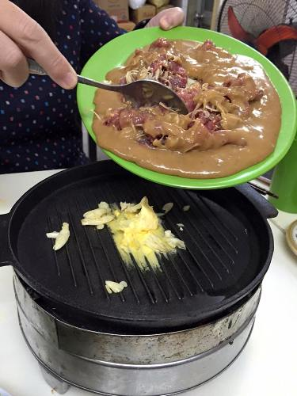
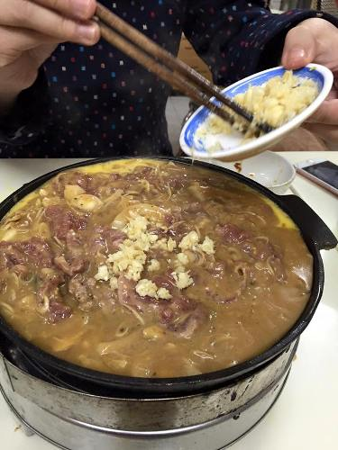
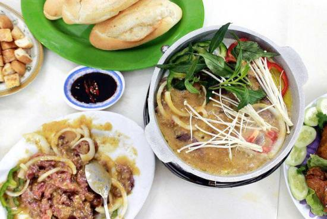

Thịt bò thơm mềm hòa quyền trong nước sốt me sệt sệt, xen lẫn vị chua - ngọt, đậm đà là cảm nhận chung của những ai từng thưởng thức món Bò nhúng me!!
Món ăn này được chế biến từ nguyên liệu chính là thịt bò, sốt me Đắk Lắk, thêm gia vị nổi bật là rau rừng Tây Nguyên. Loại rau đặc biệt này được chủ quán tiết lộ là rất sạch và bổ dưỡng, vì rau được hái trên rừng và vận chuyển từ Đắk Lắk ra Hà Nội bởi ngoài Bắc không có loại rau này. Nước sốt me cũng rất đặc biệt bởi được chế biến từ 52 loại hoa quả, gia vị rừng khác nhau ở Đắk Lắk. Bởi vậy, từ món chính đến các gia vị ăn kèm đều mang một hương vị đặc trưng, không lẫn vào đâu được. Rau rừng thơm, có độ giòn sật sật, mùi vị gần giống với cây đinh lăng nhưng không bị hăng và dễ ăn hơn nhiều. Thịt bò sử dụng trong món ăn này được chọn lựa loại tươi ngon, mềm thịt, để ngập trong nước me chua, sệt sệt đậm đà, cho lên chảo, đảo cùng bơ, tỏi, nhúng kèm rau sống, rau rừng và nấm kim châm, ăn với bánh mỳ nướng giòn giòn mới có thể cảm nhận hết hương vị đặc biệt của món bò nhúng me.
Thịt bò được tưới ngập bằng nước sốt me.
Sau đó, cho lên chảo cùng bơ tỏi dậy mùi thơm.
Bò nhúng me quả thực là một món rất dễ ăn với vị chua chua, ngọt ngọt và không gây cảm giác ngấy.